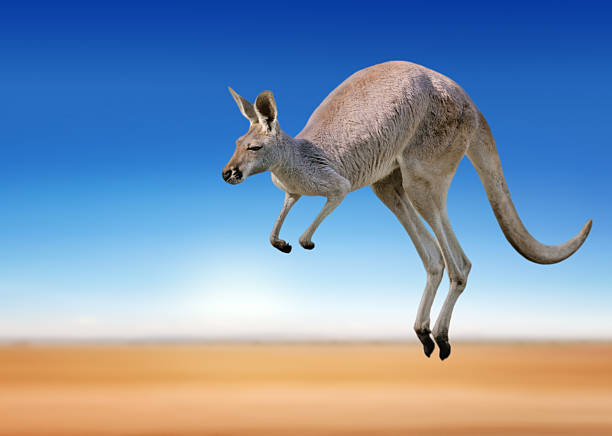
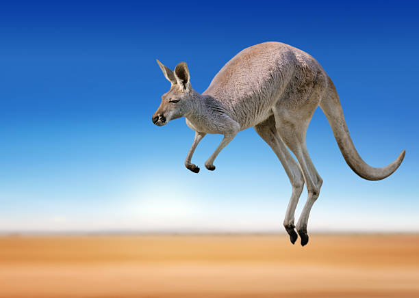
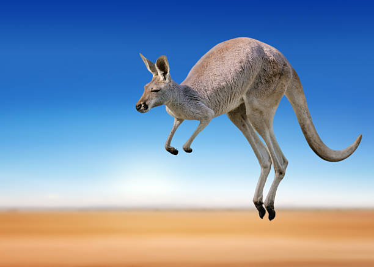
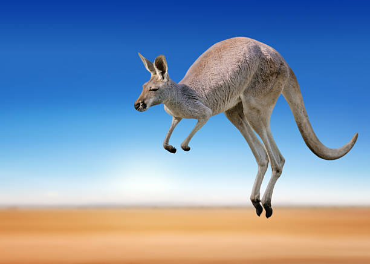

Кенгуру – це велика травоїдна тварина, що належить до класу ссавців та родини кенгурувих. Знамениті своїми потужними задніми ногами, які вони використовують для стрибків на великі відстані. Ці марсупіалії мають характерний мішок, в якому носять та розвивають свої малята. Зустрічаються головним чином в Австралії та Папуа-Новій Гвінеї. Кенгуру – це символ австралійської фауни та славляться своєю спритністю в стрибках і непересічним зовнішнім виглядом.